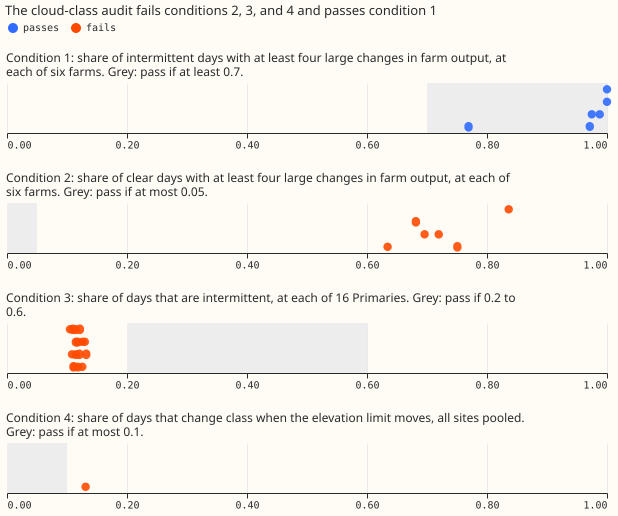

Does the meter of a group of Primaries, minus the other Primaries and the outside generators, show the sign of the flow through one Primary that reports apparent power?
We asked whether the meter at the top of a group of substations can show which way power flows through one substation in the group, and this experiment could not answer. A bulk supply point (BSP) is the substation that feeds a group of Primary substations, and its meter reports signed power. A Primary substation steps the voltage down to 11 kV. Eight of the 16 Primaries in this study report apparent power in megavolt-amperes (MVA), which has no sign, so a Primary that exports solar output shows a rise in its reading and not a negative value. Where a Primary reports real power in megawatts (MW), its sign is known. Primaries are labelled D3, D8, D10, and so on, and the two BSPs are BSP A and BSP B.
We tested the idea in two cases where the true flow is known. From the BSP meter we remove the readings of the other Primaries below the BSP and put back the output of the metered generators that connect to the BSP directly, because the meter nets that output off. The remainder is the left-out Primary's own flow if the idea holds. We then ask whether the hourly change of the remainder follows the hourly change of the left-out Primary. In the first case, a separate 44-day record of one generator below D8 gives the true flow. In the second case, D15 reports a signed series, and we take its absolute value to imitate a Primary that reports only a magnitude. If both cases pass, the same test would run at D12, where the flow is not known.
No test gave a usable answer. The generator test was too noisy to read. The D15 sign test had no hourly change large enough to score. The slope of the remainder's change against D15's change was 2.0, where perfect cancellation gives 1. The audit that decides whether the later rungs may run also failed. No forecast is made or scored.
Terms and plan
The experiment ran in jobs, each one script, and each job tests one rung of a staged plan. A bar is a threshold written into the plan before any data were read. The plan and its bars are the specification, and they are unchanged on this page.
Job 1 (rung U0) holds no fit and no hypothesis. It joins each Primary to its BSP, classes every metered generator, checks the generator record's coverage, the alignment of time stamps, gaps, the holdout, and the era-split table, runs the cloud-class audit from the sky alone, and counts the pairs of a host Primary and a solar farm that lie under the same sky. A failed audit, or fewer than four same-sky pairs of unmetered farms, stops later rungs.
Job 2 (rung U2a) tests the BSP route against the two known cases. Its tests use four terms:
- Closure slope: the slope, through the origin, of the hourly change of the remainder on the hourly change of the left-out child's true flow, after both are de-meaned at matched quiet times. A slope of 1 means the BSP meter cancels perfectly.
- Detection limit and void: the detection limit of a test is 2.8 bootstrap standard errors. A test is void when its detection limit exceeds its bar, because a slope the size of the bar could not be told from zero. A void test is reported as void and never read as a pass.
- Scorable hour: an hour where the absolute hourly change of D15's folded reading is at least twice the noise scale of the remainder's change, and the sign of D15's flow does not cross zero within the hour. The noise scale is the robust standard deviation of the remainder's hourly change.
- Placebo: the same test with the regressor shifted in time, which should read zero.
Job 3 (rung U2b) is one joint regression at BSP A that would have tested reverse flow at D12, and
the rung U1 would have paired each solar farm with its host Primary. Neither ran, because the
audit of job 1 failed, as the plan says. The sign rule for the two versions of a Primary's series
(with and without the add-back of an unresolved generator) belongs to job 3: the verdict is the
common verdict of the two fits, and inconclusive otherwise.
The reactive floor in the hypothesis is the reactive power (the part of apparent power that does no work) that an MVA reading includes even when the real power is zero. The hypothesis says that an outside generator is subtracted, and in sign terms its output is added to the remainder, as above.
| Test of job 2 | Bar |
|---|---|
| Generator record | Detection limit under 0.5; slope interval inside -1.3 to -0.7 and excluding 0; circular shifts by 7 and 14 days give intervals that include 0 |
| D15 closure | Detection limit under 0.3; slope interval inside 0.7 to 1.3 |
| D15 sign | Area under the receiver operating characteristic curve (AUC) at least 0.85 on scorable hours, at least 200 of them |
| D15 placebo | D15's reading shifted by 7 days: interval of the AUC includes 0.5, at least 200 scorable hours |
| Report only | D10 closure under BSP B; raw (not de-meaned) closure and AUC; reach, the share of D15's hours that are scorable |
The pre-registered verdict is inconclusive. The prediction in the front matter quotes an AUC
above 0.9, and the bar is 0.85. Job 1 ran and failed its audit, and job 2 found no readable test in
the binding variant.
Results of job 1: the cloud-class audit and the pairing checks
The cloud-class audit failed on three of its four conditions. The audit classes each day from the clear-sky index, which is the ratio of measured to clear-sky irradiance from CAMS. A fast change is a daylight half-hour where the index changes by at least 0.15. A day is intermittent when its mean index lies between 0.35 and 0.85 and it holds at least six fast changes. A day is clear when its mean index is at least 0.85 and it holds fewer than two fast changes. A large change in farm output is a half-hour change above 10% of the farm's capacity.
| Condition | Bar | Value | Result |
|---|---|---|---|
| 1: share of intermittent days with at least four large changes in farm output, each of six farms | At least 0.7 | 0.77 to 1.00 | Passes at all six |
| 2: share of clear days with at least four large changes in farm output, each of six farms | At most 0.05 | 0.634 to 0.836 | Fails at all six |
| 3: share of April-to-September days that are intermittent, each of 16 Primaries | 0.2 to 0.6 | 0.105 to 0.130 | Fails at all 16 |
| 4: share of days that change class when the elevation limit moves from 10° to 15°, all sites pooled | At most 0.1 | 0.131 | Fails |

Twenty-one of the 36 pairs of a host Primary and a solar farm are under the same sky. The six
host Primaries are D5, D9, D10, D11, D14, and D16, and each is paired with each of the six farms. A
pair is same-sky when the half-hour changes of the clear-sky index at the two sites correlate at 0.5
or more. All 21 pairs involve metered farms, because all six farms are metered generators under a
BSP. An unmetered farm is a farm with no meter reading in the data, and no pair counts towards the
rule of at least four same-sky pairs of unmetered farms. The farm-pair rung is therefore
inconclusive by its own rule, and the metered pairs are reported apart.
Only D8 has an add-back candidate. An add-back is a metered generator's output added back into a
Primary's reading, where the Primary's meter already nets it off. A generator is a candidate at a
Primary when it lies inside the Primary's service-area polygon. D3, D12, and D22 have none, so the
form of their series needs no decision (status not_needed). D8 has one, so the form of D8's series
is unresolved, and job 2 reports a second, non-binding variant for it. These four Primaries are the
ones that report apparent power and sit under BSP A, with D8 the Primary tested by the generator
record.
The generator record covers the BSP meter for the whole of its 44 days. For 84% of the record's 2-hour changes the residual change is readable, and those readable changes hold 90% of the squared change. The coverage of 100% is above the bar of 90%, so the generator test is not void on coverage.
Four other checks of job 1 passed. The time stamps of all 18 power series that carry a signal align at lag 0. No row on or after the holdout date was read. The generator counts match the design at both BSPs (eight at BSP A and five at BSP B). No half-hour gap longer than a day was found at the five Primaries checked.
Three checks are report-only. Five generators fall in a different class (inside or outside a
Primary) under the second, joint fit of every Primary on all well-covered generators together, and two
generators change label between D8's eras. The switching logs could not be read, because a module
failed to import. Job 1 exits with code 2 after writing every output when the audit fails, so its
run log records completed: false, which is the audit's stop signal and not a crash.
Results of job 2: the tests against the two known cases
In the binding variant no test of job 2 was readable, so none passed or failed. The verdict is
inconclusive.
| Test | Result | Outcome |
|---|---|---|
| Generator record, leave-out form | Slope -0.85 (-1.16 to -0.39), detection limit 0.54 against 0.5 | Void |
| Generator record, shifts by 7 and 14 days | 0.28 (0.04 to 0.61) and 0.17 (-0.17 to 0.58) | Report only, because the main test is void |
| D15 closure | Slope 2.02 (1.72 to 2.36) on 7,113 hourly changes over 413 days, detection limit 0.46 against 0.3 | Void |
| D15 sign | 0 scorable hours | Void |
| D15 placebo | 0 scorable hours | Void |
The generator slope is near the expected -1, but 44 days give an interval too wide to count it.
The standard error is 0.194, so the detection limit of 0.54 is just over the bar of 0.5. The
all-children form, which also subtracts D8's own reading, gives -0.84. The non-binding variant that
also adds back the unresolved generator gives a readable test, with slope -0.81 (-1.07 to -0.45). The
variant's interval extends above the upper end of the band at -0.7. Had that variant bound, its
verdict would have been not supported. The variant is non-binding because adding back an
unresolved generator risks counting the generator twice.
The D15 sign test and its placebo have no scorable hour, because no hourly change of D15 reaches the size threshold. The size threshold is twice the noise scale. Reach, the share of D15's hours that are scorable, is therefore 0.0.
The D15 closure estimate of 2.02 lies above the bar of 0.7 to 1.3, and the test is void. The report-only D10 closure under BSP B is 7.50 (7.18 to 7.81), with three scorable hours. In the binding variant no test failed.
Diagnosis written after the results
A second Claude Opus instance diagnosed the results after the fact, and the diagnosis changes no verdict. The Opus agent recomputed the D15 closure slope in plain NumPy from the same loaders, and got 2.02195 on 7,113 hourly changes, which matches the run's 2.02195 to 15 significant figures. It found no defect in the code that computes the closure slope, the engine test, or the sign test, the three results it examined. It attributes the closure slope of 2.02, the void tests, and the cloud-class audit failure to four flaws in the specification, which "Four rules to restate before any rerun" lists.
D15's flow is too small for the meter at BSP A to show its direction. After de-meaning, D15's largest hourly change is 2.4 MW. The size threshold is twice a noise scale of 2.89 MW, which is 5.8 MW, and D15's 99th-percentile change is 1.26 MW. A threshold that left 200 scorable hours would sit at about 0.3 noise scales, where the ratio of the remainder's change to D15's change is mostly noise. The sign test therefore has no usable power at D15 at any threshold we examined. The specification predicted that under half of D15's hours would score, and did not compare the share of scorable hours with D15's size.
At D15 the meter follows the substation in dark hours and moves about two and a half times as much in lit hours. A dark hour has the sun at or below 0° at both ends of the hour, and a lit hour has the sun at least 10° at its end. The remaining hours, in twilight, enter the whole-record slope of 2.02 and neither row of the table, so the two rows hold 6,020 of the 7,113 hourly changes. Even the dark D15 interval has a detection limit of 0.45, so it is void against the bar of 0.3.
| Child | Hours | Closure slope | 95% interval | Hourly changes |
|---|---|---|---|---|
| D15 | Dark | 0.96 | 0.62 to 1.27 | 2,793 |
| D15 | Lit | 2.53 | 2.08 to 3.02 | 3,227 |
| D10 | Dark | 1.35 | 1.25 to 1.44 | 9,223 |
| D10 | Lit | 8.75 | 8.38 to 9.09 | 8,656 |
The excess sits in the BSP meter and not in the subtraction. Regressed on D15's hourly change over the span after both 2025 transformers start, which is a larger set of hours than the 7,113 above, the BSP A meter has slope 2.60, the other eight children together have slope 0.47, and the added-back generator has slope 0.01. Those three terms combine as 2.60 - 0.47 + 0.01, which is about 2.1, so they agree with the whole-record slope of 2.02 to within the difference of the two row sets. No child is subtracted twice.
Two daytime mechanisms fit the evidence, and these data cannot separate them. The first is generation under the same sky that D15's reading does not include. The second is a partial add-back of embedded solar inside D15's own series. A slope above 1 means that the unmetered remainder of the BSP moves with a child that is small against the remainder, here D15 or D10. The non-binding variant that adds back the unresolved generators lowers the D15 slope from 2.02 to 1.58. The variant risks counting one generator twice, so 1.58 is not a cleaner estimate.
The 7-day placebo of 0.28 is the largest of 38 placebo slopes, and the two-placebo rule would
probably have failed the generator test by chance. Shifting the generator record by every whole
number of days from 3 to 40 gives 38 placebo slopes with mean +0.007 and standard deviation 0.169.
The 7-day value lies 1.6 standard deviations above the mean, and the main slope of -0.85 lies 5.0
standard deviations below it. The rule needs both the 7-day and the 14-day interval to include 0.
Each placebo excludes 0 by chance about 5% of the time, so the rule fails a true null about 10% of
the time. Had the main slope been readable, the 7-day interval alone would have failed the test, and
the verdict would have been not supported, which stops job 3.
Condition 3 of the audit fails because the CAMS clear-sky index changes only once an hour, and conditions 2 and 4 fail for separate reasons. At D15's CAMS point the mean absolute change of the index is 0.106 on half-hours ending at :30 and exactly 0 on half-hours ending on the hour, because the frame this experiment reads holds the index constant within each hour. Only about 13% of days reach six fast changes, although 67% of April-to-September days have a mean index inside the intermittent band, and the median of those days has four. Condition 2 fails because the output of a farm on a clear day ramps with the sun, and 64% to 70% of its large changes fall at sun elevations under 30°. Condition 4 fails because the class boundaries fall where a difference of one fast change in a small daily count moves a day into another class.
Four reporting faults in the code do not change any outcome. First, the result row
d15_sign_with_crossing reports the number of finite hours (7,111), where the area under the curve is
computed on no rows. Second, the docstrings say that the all-children slope equals the leave-out slope
minus 1, which holds only for a child that always imports, and D15 exports on 77% of half-hours after
both 2025 transformers start. Third, the size-threshold diagnostics (noise scale, threshold, and
largest change) are not written to the run log. Fourth, job 1 does not report the time resolution of
CAMS.
Checks
- Median minus mean forecast, per site, and the error of the mean or median forecast beside each quantile-score contrast: not applicable, because no forecast is scored.
- Audit triggers: two fired. A control would have failed, because the 7-day placebo interval
excludes 0 although the main test is void, and a result contradicts its prediction, because the D15
closure slope is 2.02 against a bar of 0.7 to 1.3. The Opus diagnosis served as the audit. It found
that each trigger follows from a data fact or a specification flaw (the sections above), and no
code defect in the three results it examined. The four reporting faults are to be fixed before any
rerun. The diagnosis is the private plain-text file
e722_u2a_diagnosis.mdin thebriefs/msa_architecture/folder underdata/ml-experiments/, so this page does not link it.
Four rules to restate before any rerun
A rerun of job 2 under the current rules would probably reproduce the void tests, because the cause of each is a property of the data or of the rules and not of the code. The diagnosis names four rules to restate:
- the D15 sign test needs a signed child whose swings are large against the BSP's remainder, or it is dropped;
- the closure bar needs to bind on dark hours, or to include a term for generation under the same sky;
- the placebo rule needs the null distribution of placebo slopes over many shifts, or a joint test, in place of two intervals that must both include 0;
- the cloud class needs half-hourly CAMS or a definition that suits hourly steps, and condition 2 needs the daily arc of the sun taken out.
A follow-on experiment with restated rules is proposed, and it would be labelled post hoc.
Method
- Every test is an ordinary least-squares regression through the origin on series de-meaned at matched quiet times, with the regressor's noise left in, so a slope below 1 can arise from that noise.
- The remainder that leaves Primary
iout is the BSP meter minus the readings of every other child, plus the output of each metered generator that sits outside every Primary or is added back, and it never subtracts the reading of Primaryi. A generator's output enters only where the add-back regression of job 1 puts the generator outside every Primary, or in a Primary's added-back series, and never twice. The add-back candidates at a Primary are the generators inside the Primary's service-area polygon. - The regressors are the generator record's 2-hour change and the absolute value of D15's signed series, and D15's signed series is also the truth for the sign. Nothing is a neural network or a hidden-state model.
- Nothing is trained. Each job runs once on one core, the seed of every bootstrap is fixed, and job 1 took 7.9 seconds on one core and job 2 took 1.2 seconds.
- Matched quiet times are half-hours with the same local half-hour, calendar month, and day type (weekday against weekend or bank holiday) that lie at least six half-hours from a change in the generator's state.
- Every interval is the 2.5th to 97.5th percentile of 1,000 bootstrap replicates that resample whole days, with the same resampled days shared by every child of one BSP.
- A test is void when its detection limit of 2.8 bootstrap standard errors exceeds its bar. The generator test is also void if the BSP meter covers less than 90% of the record's 44 days.
- Three rules set the job 2 verdict: a passed sign test with a void placebo counts as void, a
failed test of any kind gives
not supported, andinconclusiveresults when no test is readable. - No row on or after the holdout date was read, and the standard output of every job holds ratios, counts, shares, and intervals only.
Files
ml-experiments/00722-msa-mva-bsp-closure-and-fast-hint/e00722_core.py: the named constants, the bootstrap, the matched-time de-meaning, and the decision rules.ml-experiments/00722-msa-mva-bsp-closure-and-fast-hint/e00722_u0.py: job 1, which wrote the checks, the class audit, the same-sky pairs, and the era-split table below.ml-experiments/00722-msa-mva-bsp-closure-and-fast-hint/e00722_u2a.py: job 2, which wrote the results table and the verdict file below.ml-experiments/00722-msa-mva-bsp-closure-and-fast-hint/e00722_u2b.py: job 3, which did not run.ml-experiments/00722-msa-mva-bsp-closure-and-fast-hint/e00722_sky.py,e00722_data.py,e00722_d8core.py,e00722_guard.py,e00722_common.py, ande00722_testkit.py: the cloud class and audit, the loaders, the D8 era handling, the holdout guard and output paths, the shared helpers, and the synthetic-array helpers of the tests.ml-experiments/00722-msa-mva-bsp-closure-and-fast-hint/tests/:conftest.pyand sixtest_*.pyfiles (79 tests on synthetic arrays, no real data and notorch), which run only withuv run --no-sync pytest ml-experiments/00722-msa-mva-bsp-closure-and-fast-hint --run-studies.ml-experiments/00722-msa-mva-bsp-closure-and-fast-hint/e00722_figure.py: drawsfigure_1.svgfrom the class-audit table.ml-experiments/00722-msa-mva-bsp-closure-and-fast-hint/run.sh: the launch wrapper, which runs no job without--go.data/ml-experiments/00722-msa-mva-bsp-closure-and-fast-hint/u0_checks.json,u0_class_audit.csv,u0_same_sky_pairs.csv,u2a_results.csv,u2a_verdict.json, and the run logs: the aggregate outputs that this page quotes (written by the jobs).u0_era_split.csvis written too and is not quoted. Dated detail is in thePRIVATE/subfolder of that folder.data/ml-experiments/briefs/msa_architecture/e722_u2a_diagnosis.md: the private diagnosis behind the section "Diagnosis written after the results" (read only, never published).